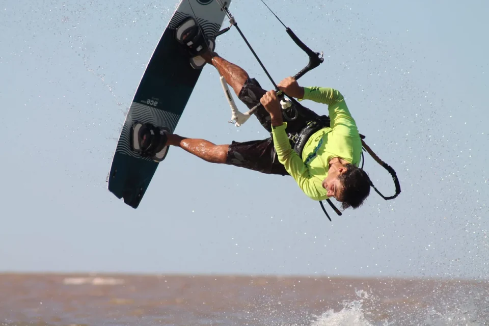
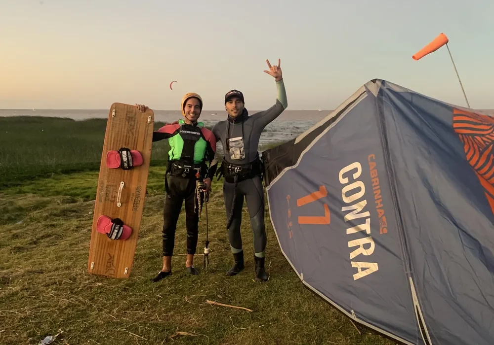

KITESURF
ACASSUSO
Deslizamiento veloz, sensación de vuelo y libertad pura propulsada por cometa y arnés. Te formamos con metodología paso a paso, desde el control de la ventana de viento en tierra hasta la navegación autónoma ceñida en el Río de la Plata.

DE CERO A NAVEGAR SOLO
Diseñado para que cada minuto en el agua cuente. Sin frustraciones, avanzando a tu propio ritmo con un instructor dedicado y atención personalizada.
TEORÍA & PILOTAJE
- Lectura del viento y ventana de vuelo neutra.
- Sistemas de seguridad y suelta rápida (quick-release).
- Armado, chequeo de líneas y despegue asistido.
- Pilotaje fino del cometa a una y dos manos.
BODYDRAG & TRACCIÓN
- Entrada al río sin tabla remolcado por el kite.
- Generación de potencia controlada con ochos de tracción.
- Bodydrag contra el viento para recuperar la tabla en el agua.
- Relanzamiento del cometa caído al agua en segundos.
WATERSTART & PLANEO
- Calce de pies en los footstraps sincronizado con el cometa.
- Golpe de potencia coordinado (power stroke).
- Transferencia de peso para ponerse de pie sobre el río.
- Primeros metros de planeo hacia ambas direcciones.
CEÑIDA & RUMBO
- Postura de ceñida: clavar canto para remontar el viento.
- Regreso al mismo punto de partida sin derivar corriente abajo.
- Transición y cambio de rumbo sin sentarse en el agua.
- Reglas de paso náuticas y criterio de spot independiente.
EQUIPO Y RESPALDO TOTAL
No necesitás comprar nada para empezar. En Ombú te equipamos con material nuevo y protocolos probados en más de 15 años de navegación en Acassuso.

EQUIPO 100% PROVISTO
Kites bow e híbridos modernos, arneses ergonómicos, chalecos de flotación de impacto y cascos homologados para náutica.

INSTRUCCIÓN 1 A 1 EN VIVO
Tu instructor te acompaña de forma cercana y constante en el agua. Corrección de postura y evolución a tu propio ritmo sin presiones.

LANCHA DE RESCATE
Embarcación a motor dedicada en el agua en todo momento. Si el viento rota, cae o te cansás, te levantamos y te regresamos a la playa.

SPOT & INSTALACIONES
Acceso a vestuarios con duchas de agua caliente, lockers seguros, guardería, cafetería y una comunidad activa de kiters todo el año.
ELEGÍ TU FORMA DE EMPEZAR
Clases 100% personalizadas. Reservás por sesión coordinando día y horario según el pronóstico de viento óptimo en el Río de la Plata.
CLASE INDIVIDUAL
Ideal para probar el deporte o tomar clases sueltas adaptadas a tu nivel actual.
- Instructor exclusivo dedicado (1 a 1)
- Equipo completo de kite, arnés, traje y casco
- Asistencia cercana y seguimiento en el agua
- Apoyo activo de lancha de rescate en el agua
CURSO AUTONOMÍA
El programa completo para aprender todo el proceso hasta salir y volver navegando sin ayuda.
- 6 sesiones intensivas de 2 horas (12h de instrucción)
- Todo el equipamiento 100% provisto sin desgaste propio
- Seguimiento pedagógico continuo de objetivos
- Certificación de nivel y asesoría de compra de equipo
- Integración a la comunidad activa de kiters Ombú
PERFECCIONAMIENTO
Para navegantes que quieren perfeccionar saltos, ceñida profunda o corregir posturas.
- Técnica de salto y sustentación en el aire
- Transiciones dinámicas y cambio de amura fluido
- Navegación con chop y vientos fuertes
- Posibilidad de entrenar con tu propio equipo
EL BANCO DE ACASSUSO
Ubicada en Sebastián Elcano 994, nuestra escuela cuenta con el mejor spot del Río de la Plata: banco de arena poco profundo, viento franco y un entorno seguro para navegar.
AGUA A LA CINTURA (BANCO DE ARENA)
El banco de arena de Acassuso te permite hacer pie fácilmente durante tus primeras etapas de pilotaje y waterstart, ganando confianza inmediata sin agotamiento innecesario.
VIENTOS PREDOMINANTES LIMPIOS
Los vientos del Sudeste (SE), Este (E) y Noreste (NE) entran directos sobre la costa de San Isidro sin turbulencias provocadas por edificios, generando tracción constante.
CLUB E INSTALACIONES NÁUTICAS
Guardería de tablas, vestuarios con duchas calientes, estacionamiento interno, cafetería frente al río y salida protegida al agua con botera náutica.

INSTRUCTORES CERTIFICADOS
Años de experiencia en el Río de la Plata y en los mejores spots del mundo. Te cuidan, te exigen y te motivan en cada bordo con paciencia y comunicación permanente.

EZEQUIEL
Head Coach Kite & WingEspecialista en progresión técnica, seguridad y ceñida profunda. Más de 10 temporadas formando kiters desde cero en las aguas de Acassuso.

NICOLÁS
Instructor de KitesurfPaciencia y pedagogía pura. Domina la técnica y la enseñanza náutica para que sientas calma y control absoluto desde tu primer bodydrag en el agua.

RAMIRO
Instructor & RescateConocedor milimétrico de las mareas y corrientes de San Isidro. Siempre atento en el agua para que navegues con respaldo y tranquilidad total.
PREGUNTAS SOBRE EL KITESURF
Todo lo que necesitás saber antes de tu primera clase. Si tenés otra pregunta puntual, consultanos directamente por WhatsApp y te orientamos.
No, es el mito más común. En el kitesurf la fuerza de tracción del cometa la soporta el arnés que va enganchado a tu cintura y cadera. Los brazos solo se usan con movimientos suaves para mover la barra y darle dirección al kite, sin tener que sostener tu propio peso corporal.
El viento es nuestro motor natural. Si el pronóstico no es favorable o la intensidad es insuficiente para garantizar una práctica productiva, te avisamos con antelación y la clase se reprograma automáticamente sin costo extra. Tus clases nunca se pierden.
Solo tenés que traer malla o traje de baño, toalla, protector solar y una muda seca para después. Todo el material técnico específico (cometa, barra con líneas, arnés, tabla, chaleco salvavidas, casco y traje de neoprene) te lo provee la escuela sin cargo adicional.
No. Los kites modernos son inflables y flotan perfectamente sobre la superficie del río. Te enseñamos la técnica para relanzarlos en pocos segundos. Además, contás con el acompañamiento cercano de tu instructor y una lancha a motor de rescate en guardia permanente para asistirte en cualquier momento.
Se puede comenzar a partir de los 12 años (con autorización y peso mínimo aproximado de 40 kg para manipular el cometa adecuado) y no existe límite superior de edad: tenemos alumnos de más de 65 años navegando cada fin de semana. El único requisito fundamental es saber nadar y tener ganas de disfrutar el río.